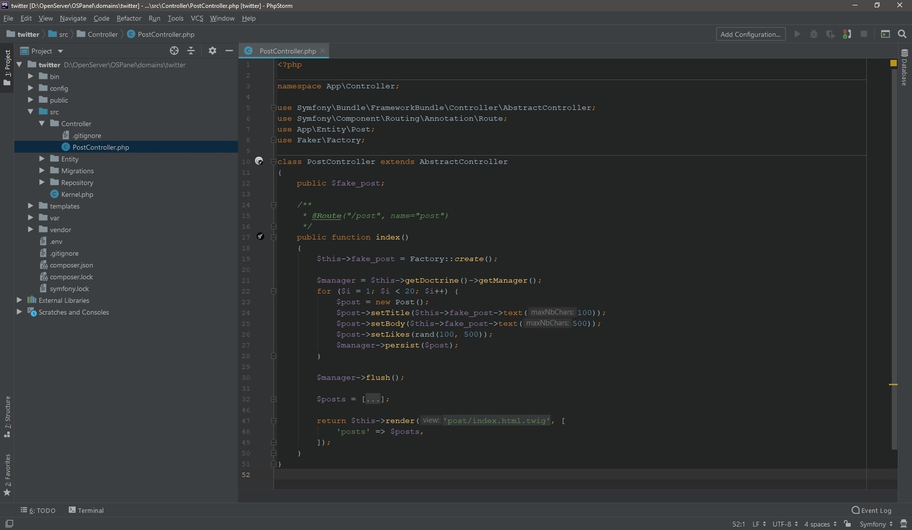
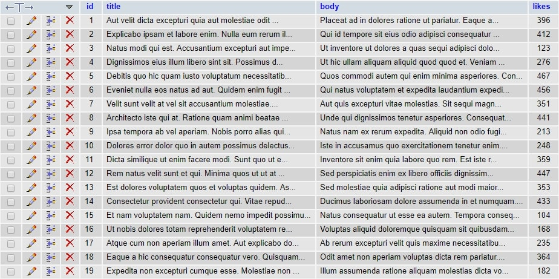
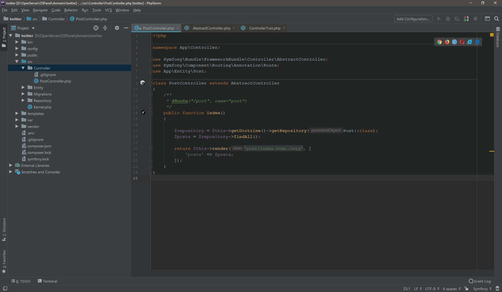
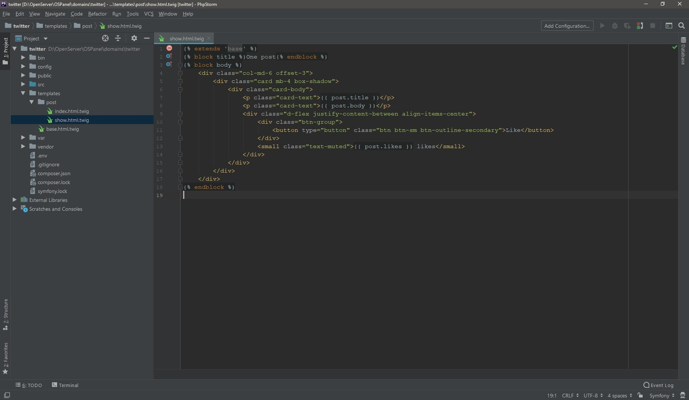
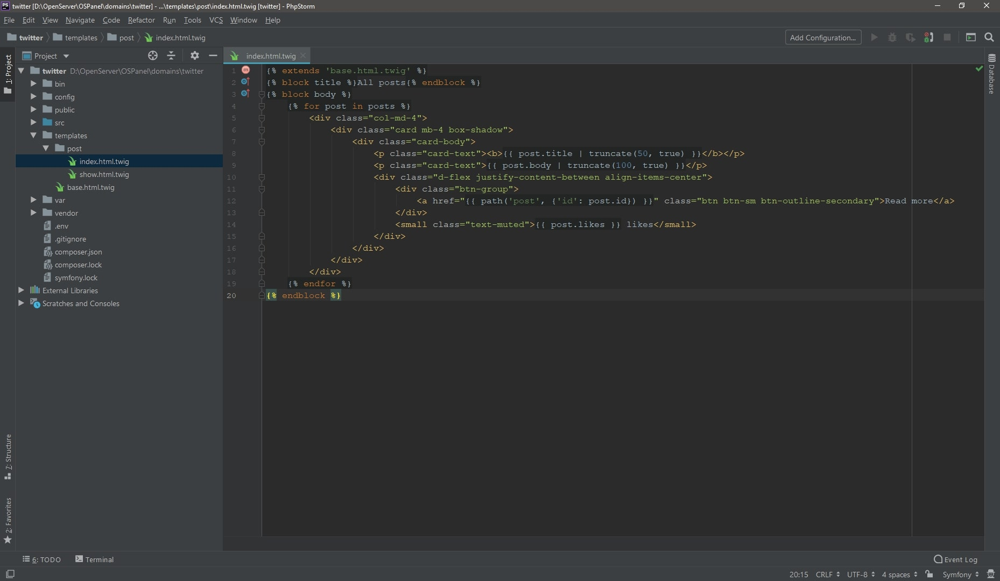

Completion of posts
Дорабатываем вывод новостей, часть 1
Сейчас новости выводятся из массива, который расположен в PostController.
Давайте заполним таблицу. Конечно можно сделать все руками, но мы воспользуемся библиотекой,
которая все за нас сгенерирует, подключим composer require fzaninotto/faker.
В PostController добавим свойство public $fake_post.
В метод index PostController'a добавим немного когда, который зальет в базу рандомный текст.
$this->fake_post = Factory::create();
$manager = $this->getDoctrine()->getManager();
for ($i = 1; $i < 20; $i++) {
$post = new Post();
$post->setTitle($this->fake_post->text(100));
$post->setBody($this->fake_post->text(500));
$post->setLikes(rand(100, 500));
$manager->persist($post);
}
$manager->flush();
Обратите внимание на use App\Entity\Post и
use Faker\Factory. Массив с постами можно пока оставить.
Вот что получилось: 
{kind=link}
Что здесь происходит?
-
- с помощью
$manager = $this->getDoctrine()->getManager()мы инициировали менеджер объекта для конкретной сущности, в нашем случае это Post. Он отвечает за сохранение объектов и выборку объектов из базы данных. -
- метод persist() в контексте
$manager->persist($post)выполняет подготовку запроса. -
- метод flush() в
$manager->flush()записывает в базу.
Осталось только обновить страницу, тем самым вызвав код на исполнение, и убедиться, что все работает. Перейдем по маршруту /post (он же главная), тем самым вызвав работу faker. Проверяем БД:  Если все прошло успешно - код faker'a в методе index можно удалить.
{kind=link}
Вывод всех новостей
Когда мы генерировали сущность Post, вместе с ней был создан репозиторий PostRepository.
С его помощью мы будем составлять запросы к базе данных. Ну и предлагаю сразу же им воспользоваться.
Теперь массив с новостями смело можно удалять и написать в методе
$repository = $this->getDoctrine()->getRepository(Post::class).
Теперь нам доступны стандартные методы для выборки findBy, findAll, findOneBy и прочие.
PostController наследуется от AbstractController, и не сразу можно заметить откуда у него метод getDoctrine(). Кого-то может ввести в заблуждение, однако это достаточно частая практика. Просто ниже используется use ControllerTrait.
Собственно, применим findAll() к репозиторию и выведем на страницу посты.
Добавляем в код $posts = $repository->findAll().
Обновляем страницу и наблюдаем свежесгенерированные новости.

{kind=link}
$this->getDoctine()->getRepository(Post::class)
и $this->getDoctine()->getManager()->getRepository(Post::class) равносильны.
Просмотр одной новости
Ранее, с помощью фильтра "truncate" мы ограничили отображаемое количество символов у новости в общем списке.
Теперь выведем на просмотр конкретную новость. Для этого создадим еще один метод в
PostController, назовем его post.
/**
* @param Post $post
* @return \Symfony\Component\HttpFoundation\Response
* @Route("/post/{id}", name="post")
*/
public function post(Post $post)
{
return $this->render('post/show.html.twig', [
'post' => $post
]);
}
Сначала обратим внимание на аннотации, а конкретно на @Route.
После /post добавился
параметр {id}, а в выражении
public function post(Post $post) мы получаем конкретный пост.
Ну и это все. Остается только немного поработать над шаблонами.
Symfony конечно хороший фреймворк, но иногда там происходят паранормальные вещи.
Например, при попытке просмотра конкретного поста периодически (именно периодически) мне приходилось лизезреть
ошибку, якобы не существует сервиса Post. Решилось это, не менее странно, обновлением annotations -
composer require annotations.
В папке templates => post создадим шаблон
show.html.twig. Код можно взять здесь.

Теперь добавим ссылки под каждый пост в шаблоне index.html.twig.
Ссылке Read more добавляем в аттрибут href
{{ path('post', {'id': post.id}) }}. Проверяем.

{kind=link}
{kind=link}